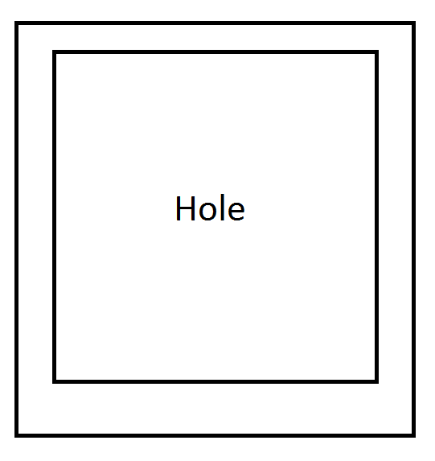

We have been tasked with evaluating the proposed Scan and Go application. This application is aimed at assisting the visually impaired community with the task of grocery shopping.
Since some documentation regarding testing was missing, we used a modified version of the pre-test questionnaire and the post-test questionnaire from the low-fidelity prototype deliverable and made a data collection sheet that will allow us to evaluate if the system meets the usability goals defined by the Scan and Go team. Additionally, some of the usability goals were irrelevant for the computer prototype testing and we therefore modified and eliminated some of them. Discussion of these modifications will be further discussed in the test plan critique section.
Since there was no indication of the number of users to be tested on, and the difficulty in obtaining users from the visually impaired community, we only tested the prototype on one partially blind user.
Three benchmark tasks have been defined for these tests. The first is about understanding the user manual content and knowing the affordances of the system. The second one involves the user taking a picture of the aisle’s overhung sign and the application responds with the content in the sign. The last one is to take a picture of a product and have the application tell the user the product in the picture and its price.
The test procedure that was followed is:
The filled out forms are provided here.
We re-defined the usability goals that were provided by the Scan & Go team. Justification of these changes will be explained in the next section.
In the attachments in the testing section above, we highlighted the comments from users and our observations. In this section, we will present these comments and observation, and relate them to the above usability goals.
| # | Observation | User Comments | Usability Goal | Quantitative Measure |
|---|---|---|---|---|
| 1 | It was difficult for the user to take a picture of only one item. | “It is difficult for me to position the camera so it only captures one item.” | Failure of Usability goal #5 | Benchmark task #2: 3 pictures included at least two products. |
| 2 | The user found it very challenging to include the price with the product. | “The price is STILL not included???” | Failure of Usability goal #6 | Benchmark task #3: 6 pictures were necessary before the user had success. |
| 3 | The user found the instructions clear enough. Didn’t require any further explanations on the affordances of the system. | “This is clear enough. Lines up with what I know from my VoiceOver use.” | System meets Usability goal #1 | Benchmark task #1: The user needed to hear the instructions only one time. |
| 4 | The user has no problem starting the camera mode of the application and taking a picture. | System meets Usability goal #2 and #3 | Benchmark task #2 & #3: The user started the camera and took a picture after one attempt only | |
| 5 | The user never needed turned to the evaluators for a question regarding the system usage. | System meets Usability goal #7 | Benchmark task #1, #2 & #3: 0 attempts have been made to ask the evaluator for assistance. | |
| 6 | The user found it relatively easy to take a picture of the overhung aisle sign. However, the first image taken was too blurry. | “Since I have low-vision, I can position the camera with the sign as it contrasts strongly with the ceiling.” | Failure Usability goal #4 | Benchmark task #2: 2 attempts were necessary to take a clear picture of the overhung sign. |
Looking at the results presented in the table above, we note that the system passes 4/7 usability goals with the single subject we tested with. We strongly believe that we could’ve benefited from testing with a completely blind user. However, due to time constraints and schedule misalignment, it was impossible to set up such a meeting.
In the attachments in the testing section above, we highlighted the comments from users and our observations. In this section, we will present these comments and observation, and relate them to the above usability goals.
Description: Visibility is of course an interesting word to use when referring to our system status, as the status has to be completely available to the user without actually seeing the device. Now if we consider visibility as the user’s ability to understand the state of the application at any given time, then this applies equally well to our movement through the states of the application. Evaluate how clear it is at any given time what the current status of the system is, and what actions are available.
RATING [over 10]: 5
Justification:
Description: Our application is striving to be very simple for the user. Since there are very few states, we want the user to be able to grab control at any given time, and quickly. Evaluate how easy it is to cancel actions, particularly how easy it is to take a new picture at any given time.
RATING [over 10]: 10
Justification:
Description: We do not want our application to require the user to remember anything about previous states in order to proceed through with evaluation. Evaluate how explicit the system is about required actions and information from the user.
RATING [over 10]: 8
Justification:
The user can benefit from a brief startup tutorial that is skippable. This would inform the user of the affordances the system allows such as using the volume buttons to take a picture. Other than that, it is relatively clear that the system relies more on recognition than recall.
Description: With application dialogues, especially speech, it is crucial to reduce the amount of user facing prompts there are. Keep in mind that conciseness and clarity in speech would be considered an aesthetic property. Evaluate how succinctly the application conveys interactions with the user.
RATING [over 10]: 7
Justification:
The first page has a minimalist design and is very good in terms of auditory aesthetics. However, the camera mode page has too many options which can be removed. We would suggest removing the flash button and the camera chooser button, as they may cause confusion and we don’t see a need to use them.
Description: Evaluate how well the user manual and prompts aid the user in completing their task.
RATING [over 10]: 6
Justification:
The user manual documentation lacks an introduction to the system. However, the section on using the system is clear and concise. The system can benefit greatly from an introductory tutorial.
The usability issues below are obtained from the usability testing performed with the user and the heuristic evaluation performed with a usability expert. These issues are presented in a priority rated from most urgent to least urgent.
It took the user 6 attempts to take the picture correctly, including the price. On the last try, it took the user 45 seconds to the picture correctly, with a tremendous amount of focus being required. Considering our subject was a low-vision person, this task would be much more difficult for the other segment this application is meant for, the totally-blind user. We highlight the frustration the subject had with the following quote: “The price is STILL not included???”
Priority: HIGH
It took our user two attempts to take a clear picture of the overhung sign. This doesn’t seem like it can be avoided using the image analysis method being proposed. Furthermore, if the user was from the totally-blind user segment, this task would be close to impossible without the assistance from someone else. We highlight the subject’s comment on this part of the application: “Since I have low-vision, I can position the camera with the sign as it contrasts strongly with the ceiling.”
Priority: HIGH
The “visibility” of the system should be optimized. As highlighted during the heuristic evaluation, once camera mode is initiated, the system should inform the user what should be done next. Furthermore, the auditory icon made by the system wasn’t nearly loud enough when you take the loud noises inside the grocery store into account. We highlight the subject’s comment on this part of the application: “Did it take the picture?”
Priority: MEDIUM
Some of the buttons offered by the camera menu aren’t useful to the user. This includes the camera selector and the flash mode. Since lighting in supermarkets is usually not a problem, the option of flash adds clutter to the UI. Similarly, we don't see where the user would need to activate the front-facing camera for the task at hand.
Priority: LOW
As noted in the heuristic evaluation, an introduction to the system can greatly help the user understand the goal of the system. Additionally, an initial tutorial that is skippable can help the user understand how to use the system, especially when more features are added.
Priority: LOW
The installation procedure presumes users is comfortable with several software development technologies and also with the availability of the hardware and software required to BUILD the prototype, not only to install it. The explanation is far more closer to a build manual, for developers, than to an installation manual.
Suggestion: Rewrite the section with proper installation only instructions, thus removing the need to have build technologies to try the prototype.
The manual lack of a general explanation of the system main features. This is required to give users a comprehensive overall idea of the task they can accomplish with the application, in which order can be performed and how can be accessed.
Suggestion: Provide a brief introduction explaining the tasks that can be accomplished by the users using the application.
Terms like Optical Character Recognition may not sound familiar, and are far from most user population domain of expertise. This type of technology related terms should be avoided in all scenarios in end-product user documentation (user installation and manual).
Suggestion: Remove the “Optical Character Recognition” term from the user manual.
The approach employed for describing the tasks is overly simple. Tasks have been stated without specifying users’ goals while performing actions e.g: “Press one of the volume buttons to take a picture”. This approach does not related at all with the system purpose, and does not walk the user through “why” they are performing each task.
Suggestion: Rewrite the tasks description with a more step-by-step explanation that includes a detailed description of both user actions and purpose.
Sentences like “ If you don’t hear the device speak to you turn the phone off vibrate” are more appropriate of a troubleshooting guide than to a user manual. It cannot be considered as if it add an additional value to the manual, and treats users with condescendence - lot of different problems may be causing that type of issue.
Suggestion: Remove that sentence. If you want to address potential issues make a troubleshooting section at the end of the manual.
Generally, the usability goals are not stated as measurable either in a quantitative or a qualitative way. In order to perform our formative feedback, we had redefined most of the goals, aiming to test users effectiveness, efficiency or level of satisfaction with the prototype. Furthermore, some task were not included in the goals, like taking a picture of the overhung aisle signals, which are a central part of the overall user activity while shopping.
The explanation of instructions is an action either performed by the system (introduction message, manual, etc) or the test team rather than the actual users or test subjects. It is not aligned with what a usability goal means.
Suggestion: Restate this goal taking into account what the level of effectiveness or efficiency the users will have after reading/hearing the instructions. e.g: “Instructions from the user manual should only need to be heard once by the user.”
Neither, “The user is able to remove the phone from its holder with a single hand.” nor “The user is able to place the phone back on the holder with a single hand.” are part of the prototype functionality so they cannot be considered as usability goals that need to be considered in your test plan. Furthermore, they are also not specified in measurable terms.
Suggestion: Remove ‘goals’ from the listing.
Statements “The user starts taking picture by tapping on the screen.”, “The user takes a photo by pressing one of the volume buttons.”, “The camera is not blocked when the user tries to take a picture.” should be redefined in terms of measurable qualitative or quantitative aspects of the interaction.
Suggestion: As a sample of this process, we have reconverted this goals into measurable items.e.g: “The user starts the camera successfully after the first attempt.”.
The benchmark tasks corresponding to the usability goals stated are not presented in the document. Hence, we have found the need to define the required task to properly evaluate the usability of the prototype.
The benchmark tasks corresponding to the usability goals stated are not presented in the document. Hence, we have found the need to define the required document for evaluation purposes.
Suggestion: Please check the document here, where we have design the required materials to test the prototype.
As per our appreciation of the tasks carried by the test subject, point and shoot technique looks like a hard approach for visually impaired individuals. The subject in question was partially sighted, segment that does not even represent the most needed segment in the visually impaired community. From our perspective, the system makes two assumptions that diminish its potential:
The significance of these issues is relevant in a manner that could probably eliminate users’ interest in this application. The collected data from pre and post test questionnaires demonstrates this fact. The user perception of likeness to ask for assistance while shopping did not seem to be greatly impact with the use of this prototype.
We would strongly suggest the Scan&Go team to reevaluate the low-fidelity prototype phase. Is in our belief that the paper-based low-fidelity prototype used did not accurately measure the two aforementioned tasks, otherwise these fundamental problems could have been detected earlier. A device like the one depicted below may help to maintain the simplicity of the prototype while correctly addressing the users’ limitations with pointing and clicking techniques. Different approaches on this type of problems in systems design can be found in The Open Rehabilitation Journal publication.
There are other recommendations we would like to provide to the Scan&Go team.
Firstly, using a video feed instead of a still image will potentially alleviate the user burden of doing the point and shoot technique, which is overly complex given their limitations. The video feed can help them to explore first and focus later on an specific product in less radical approach.
Furthermore, the application should include a tutorial introducing user with basic application tasks before first use. This information would have a twofold purpose, as a simple form of familiarization with the application features and at the same time could serve for training and help functions. The collected data displayed the test subject asking for the existence of features -shopping list- that she was unable to locate with the current computer prototype.
| Roger Girgis | Manfred Diaz | |
|---|---|---|
| meetings | 1 | 1 |
| website | 3 | 3 |
| writing | 6 | 6 |
| total | 10 | 10 |